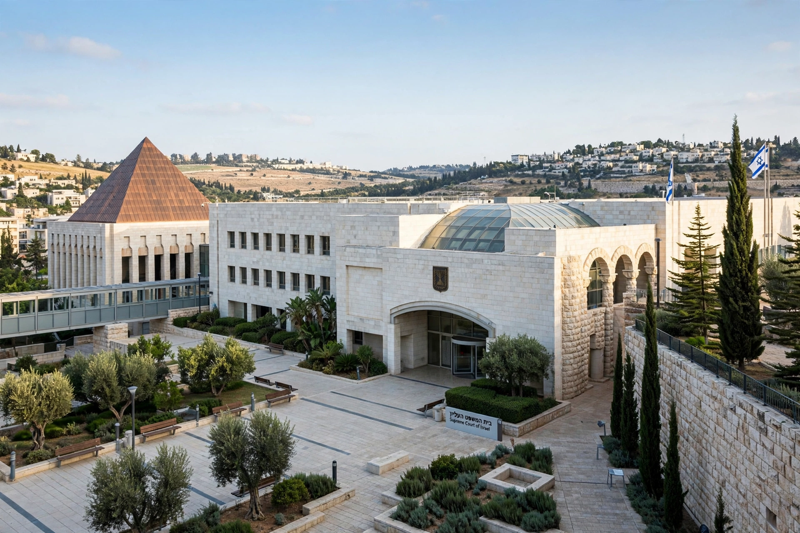

Supreme Court of Israel

| Established | 1948 |
|---|---|
| Location | Givat Ram, Jerusalem |
| Justices | 15 |
| Selection | Judicial Selection Committee |
| Dual role | Highest appellate court; High Court of Justice (Bagatz) |
The Supreme Court of Israel (Hebrew: בית המשפט העליון) is the highest court in Israel. It has ultimate appellate jurisdiction over all other courts and, sitting as the High Court of Justice (בג"ץ, Bagatz), it exercises judicial review over the actions of all state authorities, including the government, the military and the Knesset. The court is located in Givat Ram, Jerusalem, in a building opened in 1992, designed by Ram Karmi and Ada Karmi-Melamede and donated by Dorothy de Rothschild. It is headed by the President of the Supreme Court — a position held from 2023 (in an acting capacity, and subsequently permanently) by Yitzhak Amit — and consists of 15 justices appointed by the Judicial Selection Committee.
Jurisdiction
As an appellate court, the Supreme Court hears civil, criminal and administrative appeals from the district courts, usually in panels of three justices, expanded for important cases. Sitting as the High Court of Justice, it hears petitions directly against state authorities, with famously liberal rules of standing: almost any petitioner, including public-interest organisations and non-residents, may petition, and the court routinely reviews matters that in other systems would be considered political questions, including military operations, land expropriation in the occupied territories, and appointments and decisions of ministers. Its remedies include injunctions, orders nisi and declaratory relief.
Constitutional role
Israel has no single codified constitution; since the 1950s its constitutional law has been built from Basic Laws enacted by the Knesset. President Aharon Barak proclaimed a "constitutional revolution" after the enactment in 1992 of Basic Law: Human Dignity and Liberty and Basic Law: Freedom of Occupation, and in United Mizrahi Bank v. Migdal (1995) the court held that it could strike down Knesset legislation inconsistent with the Basic Laws — establishing judicial review of primary legislation. The court's activism under Barak (president 1995–2006) made it the most politically contested institution in Israel: critics charge it with overreach and unrepresentative liberalism, while supporters credit it with protecting rights in the absence of a full constitution or second chamber.
The 2023 judicial overhaul crisis
In 2023 the governing coalition of Benjamin Netanyahu advanced legislation to restrict the court's powers, including abolishing the reasonableness standard of review and changing the composition of the Judicial Selection Committee. The proposals triggered months of mass protest and a constitutional crisis; the Knesset enacted the reasonableness amendment in July 2023, and on 1 January 2024 the Supreme Court struck it down — the first time it had invalidated an amendment to a Basic Law — by a majority of 12 to 3 on the question of authority (and 8 to 7 on the merits), while armed conflict was under way following the 7 October 2023 attacks. Wider changes remained contested thereafter.